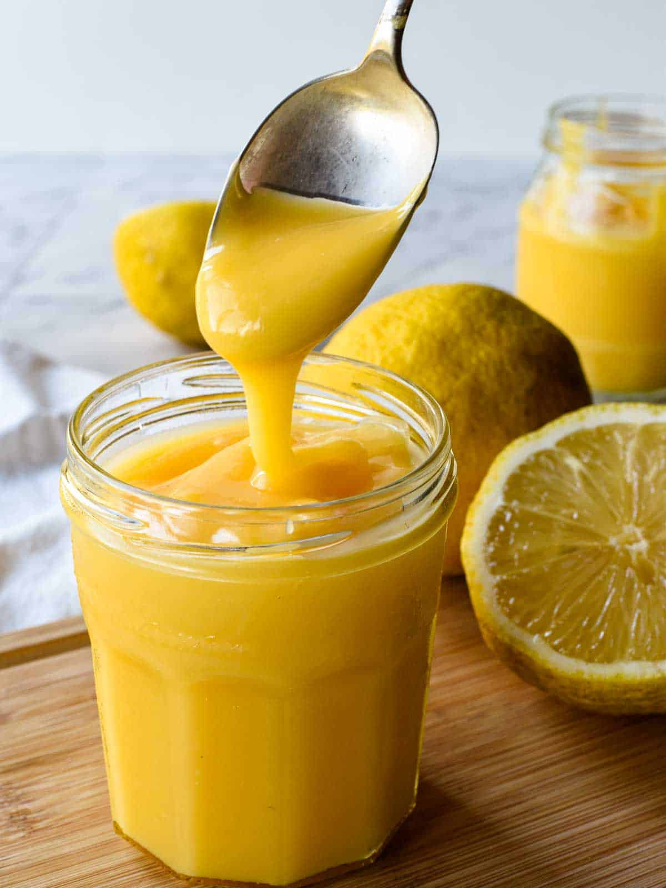

Reckless lemon curd

Here I will be introducing my arguably reckless strategy for turning out delicous lemon and mixed citrus curds. I will be writing this up as a pure lemon curd recipe, but replacing some of the zest and juice with limes, oranges and even grapefruit can yield beautiful results.
What makes the curd reckless? While other than bumping up the citrus kick compared to other recipes, I also don't use a double boiler. Cook this curd quickly and attentively, and pass it through a chinoise just in case you do curdle slightly. Let's get started.
Ingredients
- 7 egg yolks, 1 full egg
- 300 g sugar
- zest of 4 to 5 lemons, size dependent
- juice pf 7-9 lemons, size dependent
- 1/2 tsp salt
- 175 g butter, room temperature
Instructions
- Zest your lemons. I like to do this directly into my weighed out sugar to capture as much oil as possible.
- Seperate out your egg yolks, add your whole egg and set aside. Consider reserving your whites for merinques, can be a classic and texturally pleasant companion to dishes using your lemon curd.
- Juice your lemons, set juice aside.
- Combine your sugar and lemon zest in a vitamix or other powerful blender. You may be able to do this in a food processor in a pinch.
- Buzz sugar and zest until they start to form a citrus sugar. Break down as much as possible but don't worry if you are not yet able to achieve a uniform texture at this stage.
- Add eggs, around a third at a time and blend to incorporate. At this stage you are looking to create a uniform texture. Try not to allow it to overwork however.
- Gradually add around 2/3 of your lemon juice to the blender, thinning and smoothing your egg and citrus sugar blend.
- Heat a thick bottomed saucepan to medium low heat. Pour in the contents of your blender and cook, whisking constantly, until the mixture begins to thicken.
- Add your salt and the remaining lemon juice, stirring constanty, until you have a ribbonly curd like texture with a poweful lemon kick. Don't let it turn to scrambled eggs.
- Cut the heat and stir in your butter in 6 to egg small pieces until uniformly textured. Pour curd through a chinoise into a mixing bowl, cover and place in a fridge to cool.
This curd is wonderful by itself, on icecream, drizzled over cakes or fresh fruit or many other applications. Consider making merinque cookies and topping a pound cake or chiffon cake with curd and crumbled cookies for a strikingly textured desert.